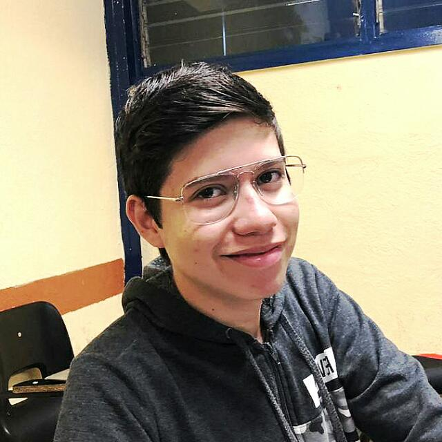

Carlos Martin Boyzo Arcadia
3314892881
20 years
Mexico
carlos.boyzo5319@alumnos.udg.mx
Social Media
Education
- Secundaria Tecnica 150 (2014-2017)
- Preparatoria 11 (2017-2020)
- Informatic Engineering (2020-Right now)
Abilities
- Responsabilty 40%
- Team Work 40%
- Creativity 20%
Work experience
Nothing
Experience in proyects
- Web with strapi and next.js
- Platform game in Unity
- Data base with Postgres
Professional interests
Work in a big company
Software knowledge
- Python
- Html & Css
- C++
Languages
- Spanish
- English
Personal references
I am a person with a lot of enthusiasm, and with the desire to improve myself